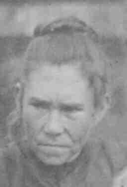
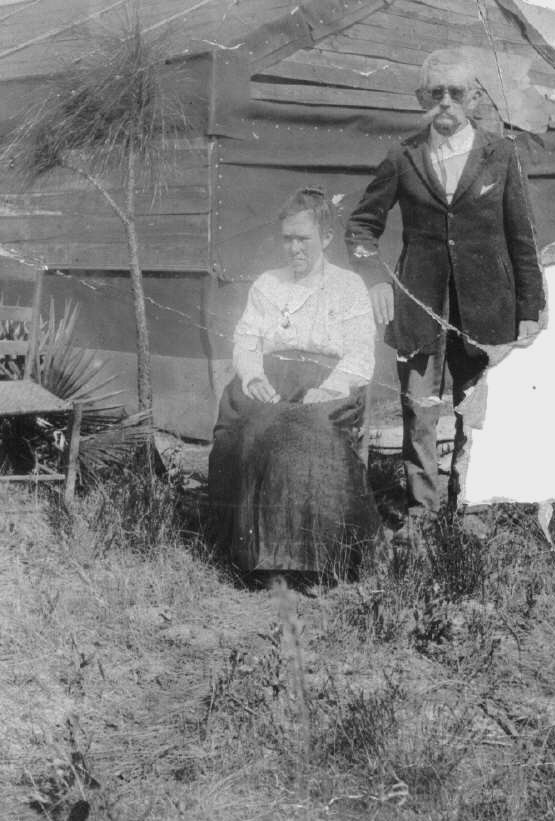

Susan Lucinda Nipper
1877–1949

Life Events
Born: 1877
Family
Spouse:
Military Service
No military service information has been added.
Biography
Biography information has not yet been added.
Photos

Sources
-
1929 Marriage Certificate — Everett Darling and Susan Nipper
Type: marriageMadison County, Florida, marriage record documenting the marriage of Everett Darling and Susan Nipper on April 18, 1929. The marriage license was issued April 12, 1929, and the ceremony was performed by G. B. Harrell, Notary Public.
-
1949 Florida Death Certificate — Susan Nipper Darling
Type: deathFlorida death certificate, state file number 28269, for Mrs. Susan Darling, widow of Everett Darling. The certificate records her age as 72 years, 3 months, and 12 days and identifies Madison County, Florida, as her birthplace.